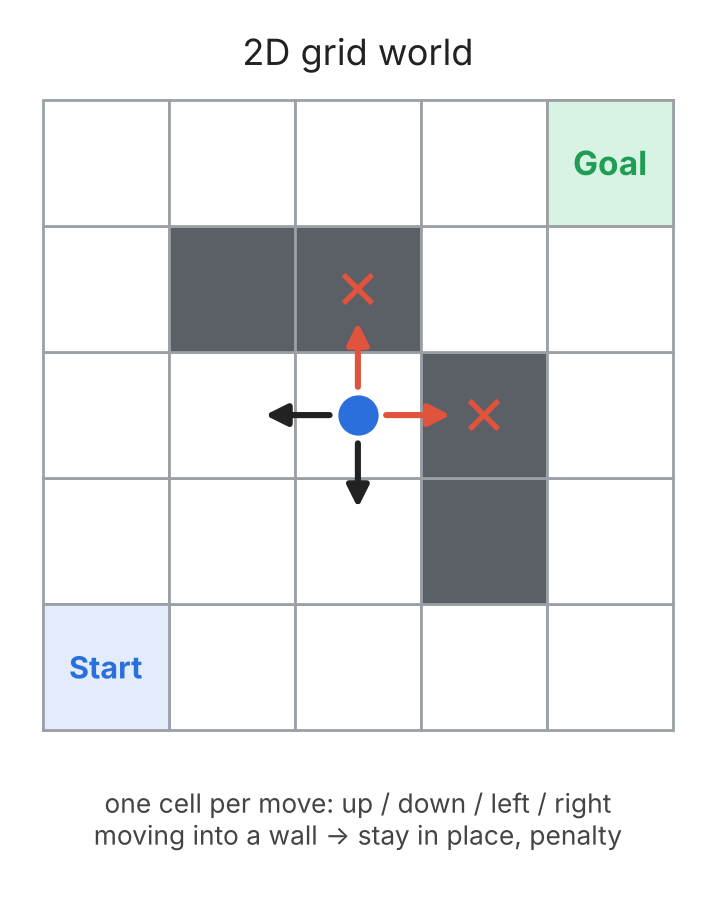
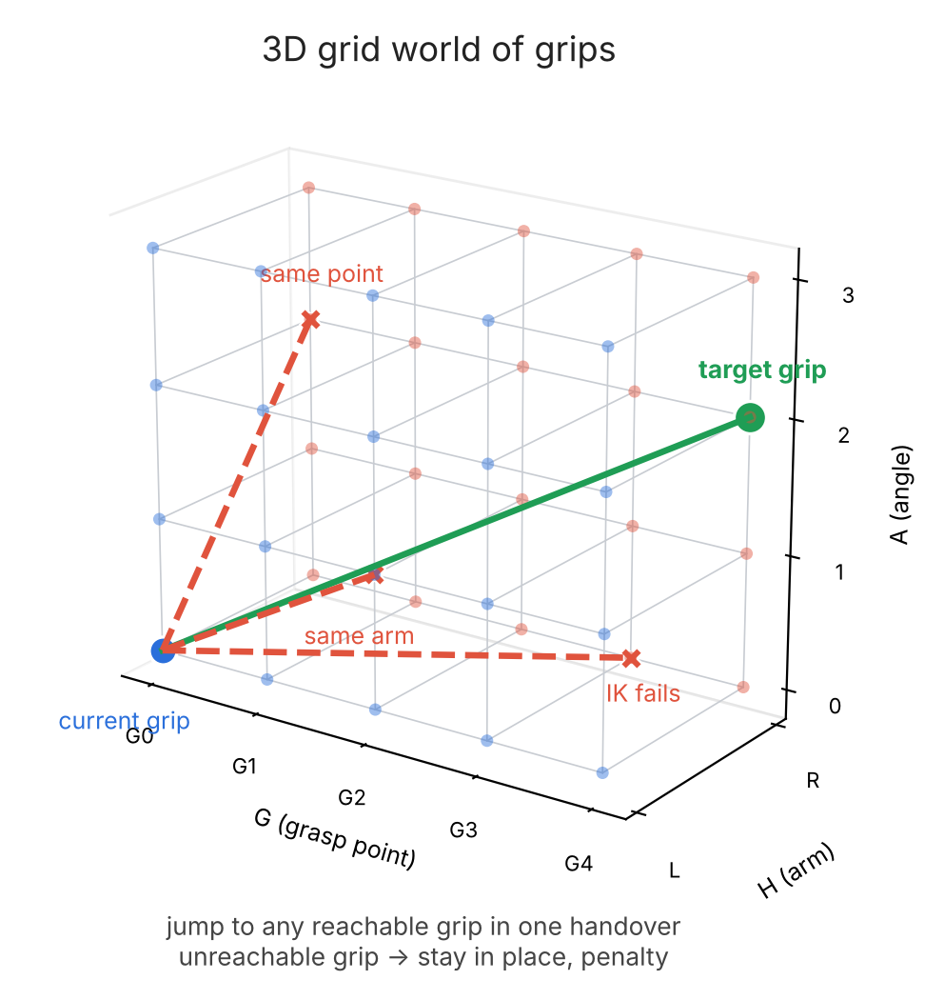
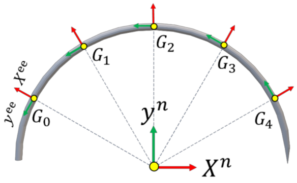
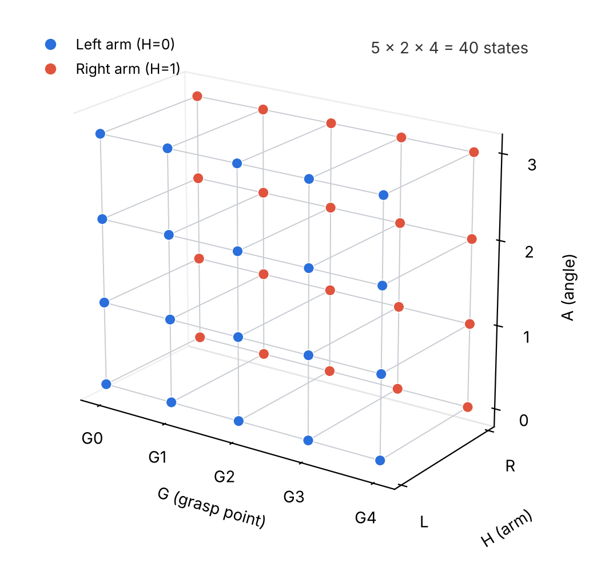
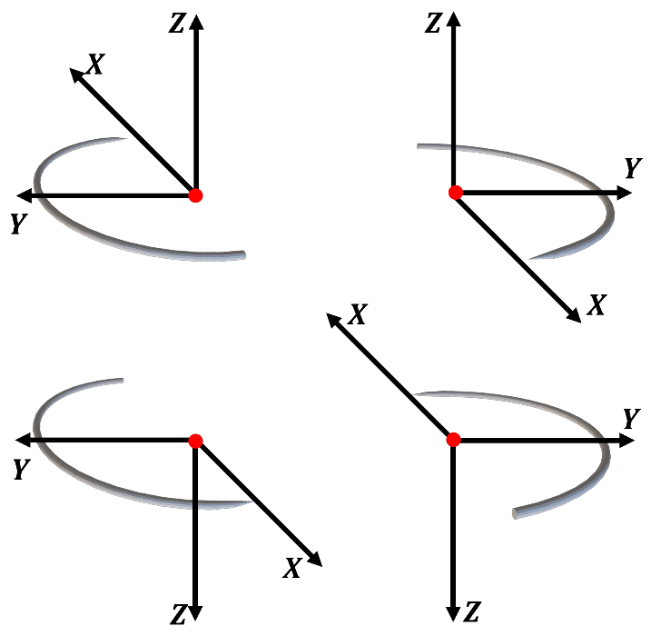
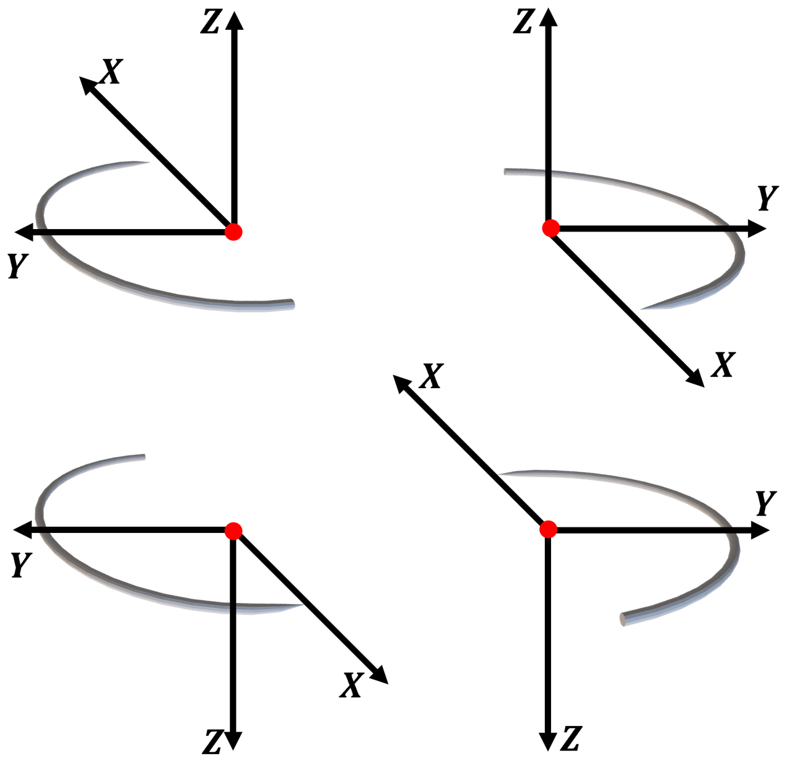

GridWorld Modelling and Q-learning for Optimal-Point Grasping of a Suture Needle¶
This week is about how I used reinforcement learning to optimise needle handover.
The key to building a good reinforcement-learning model was how to design the state, action and reward. The problem I wanted to solve was "grasp a needle lying in an arbitrary pose in the best final pose, with as few handovers as possible". It sounds rather abstract, and I spent quite a while working out how to model it.
The breakthrough came from an introductory RL textbook, 바닥부터 배우는 강화 학습 (Reinforcement Learning from the Ground Up, Seungeun Noh, Youngjin.com). It explains Q-learning with a grid world as the example. (When I was doing my degree, LLMs were nowhere near what they are today, so I had to dig what I needed out of books and papers and write every line of code by hand.) After going through the book several times, it struck me that two robot arms passing a needle back and forth could also be read as a 3D grid world.
From a 2D grid world to a 3D one¶


In the book's grid world, the agent stands on one cell of the grid and picks up, down, left or right to move one cell. If it tries to walk into a wall or off the grid, it stays where it is and loses some reward. Repeating this, the agent learns the quickest path to the goal cell.
I moved the needle handover problem onto a 3D grid. Each point of the grid is a state: which arm (H) holds which point of the needle (G) at which angle (A). An action picks the grip state after the handover, i.e. the next point to land on. So instead of moving one cell at a time as in a grid world, the agent can reach any point of the grid with a single handover, as long as the robot arm can reach it. It can even jump straight to the target grip.
The walls are unreachable grips: the other arm trying to grab the point that is already held, handing the needle to the arm that is already holding it, or a grip the arm cannot reach because inverse kinematics (IK) has no solution. Choosing one of these leaves the agent where it is and costs reward, just like bumping into a wall in a grid world. What the agent ends up learning is the path to the target grip with the fewest handovers.
| 2D grid world | 3D grid world (needle handover) | |
|---|---|---|
| state | a cell (x, y) | a grip state (G, H, A) |
| action | up/down/left/right, to the next cell | next grip state and handover orientation; any reachable point |
| Blocked | walls, edge of the grid | same point, same arm, IK failure |
| Choosing a blocked move | stay, penalty | stay, penalty |
| Goal | reach the goal cell | reach the target grip state |
Defining the state¶
Here is the state from above in more detail. A grip state is the combination of three values, G–H–A.
- G · grasping point — where on the needle the gripper holds it. The final model uses five points 30° apart on a 20 mm-radius arc (G0–G4). At first there were 19 points, 10° apart along the arc. But with points that close, the two gripper tips easily collide during a handover (the needle is far smaller than you would think, and a robot gripper is hard to make small), and training only takes longer, so I cut it down to five.
- H · grasping arm — the arm holding the needle. Left arm 0, right arm 1.
- A · grasping angle — the angle at which the gripper bites the needle. Limited to four. The reason is explained after the figures below.



Suture needles have the part meant for the gripper flattened (a D-cut). Gripping it at a slant makes the needle wobble, so I assumed the gripper is always perpendicular to the needle plane and limited the grasping directions to four.
At first there were 19 × 2 × 4 = 152 possible states. With the grasping points cut to five, there were 5 × 2 × 4 = 40. Putting grasping point, arm and angle on separate axes gives the 3D grid below.

Defining the action¶
An action is defined as choosing the grip state after the needle has been handed over. One action has four parts:
- the arm that receives the needle (H′)
- the point on the needle that arm grabs (G′)
- the grasping angle at that point (A′)
- the direction the needle faces at the moment of the handover (handover orientation)
Choosing (G′, H′, A′) means arm H′ grabs point G′ at angle A′, and the arm that was holding the needle lets go.
def decode(action): # action in 1..152
idx = action - 1
g = idx // 8 # grasping point 0..18
h = (idx // 4) % 2 # arm: 0 = left, 1 = right
a = idx % 4 # grasping angle 0..3
return g, h, a
The handover orientation always keeps the needle plane facing the camera, so the needle is easy to find in the camera image. Under that condition four orientations are used: the needle as it is, or turned 180° about its x, y or z axis. I also tried a wider range of handover orientations, but the minimum number of handovers to reach the target stayed the same. So I kept only the four cases that make needle pose estimation easy in the real world.


Combining 5 grasping points, 2 arms, 4 grasping angles and 4 needle orientations gives 160 actions.
Unreachable actions¶
The walls mentioned above, the unreachable actions, come in three kinds:
- Same point: the other arm tries to grab the point of the needle that is already held. Two grippers cannot close on the same spot at once.
- Same arm: handing the needle to the arm that is already holding it. An arm cannot hand the needle to itself.
- IK fails: the robot arm cannot reach that point with that angle and handover orientation. Inverse kinematics (IK) has no solution, or the joints would leave their range.
In all three cases, just like bumping into a wall in a grid world, the grip state stays as it is and reward is deducted.
In a grid world the walls are fixed in the map, but here the grips the arms can reach change with where and how the needle lies and with the handover orientation. The walls cannot be drawn in advance, so every time an action is chosen, IK has to check whether it is reachable. That is covered in the IK section below.
Defining the reward¶
The reward is designed so that the path reaching the target grip with the fewest handovers collects the most reward.
- −1 for every handover The policy that maximises reward is then the policy with the fewest handovers.
- +10 for reaching the target grip state
- −10 and stay in place for grabbing the same point again or handing to the same arm These moves are nonsense before any IK even needs solving. The agent should not have to consider such absurd moves at all, so they are penalised far more than a real handover (−1) to rule them out from the very start of training.
- −1 and stay in place for choosing a grip where IK fails The robot arm cannot reach it, so the needle cannot be handed over.
Later I also added terms such as a bonus for keeping the joints far from their limits and a penalty when the two arms cross. Those are covered in Part 6.
Filtering reachable grips with IK¶
Depending on where the needle lies, some points are outside the workspace and some need the wrist bent past its joint limits. So I built a filter that solves inverse kinematics (IK) for every candidate grip and keeps only the ones the arm can actually make. This is the part that computes the "walls" mentioned above, every time.
Grip frames for each candidate¶
The needle is placed flat at a random position inside a 0.7 × 0.5 m area of the table. A candidate grip is a point on the needle arc with a gripper frame attached to it. The transform that moves this frame into each arm's base frame is:
- \(T^{\text{table}}_{\text{needle}}\) — the random needle pose
- \(T^{\text{needle}}_{\text{grasp}}(g, a)\) — the grip frame seen from the needle frame Rotate about the needle's z axis to grasping point \(g\), move out by the radius, then apply grasping angle \(a\).
- \(T^{\text{PSM}_k}_{\text{table}}\) — the fixed transform from the table to arm \(k\) Read off the CoppeliaSim scene.
IK and joint range check¶
For each grip frame I solved the dVRK's analytic IK and discarded the grip if any joint fell outside its range of motion.
| Joint | Range of motion |
|---|---|
| J1 (outer yaw) | ±60° |
| J2 (outer pitch) | ±45° |
| J3 (insertion, prismatic) | 0.05 – 0.18 m |
| J4 (roll) | ±180° |
| J5 (wrist pitch) | ±90° |
| J6 (wrist yaw) | ±90° |
What an episode looks like with the IK check¶
- Place the needle in a random pose.
- Use IK to find the (point, arm, angle) states that can be grasped.
- Grasp one of them.
- Choose an action, which sets the next grip state and the handover orientation.
- Check with IK whether that grip can be reached; if so, hand the needle over. If not, stay in place and lose reward.
- Stop at the target state; otherwise go back to step 4.
When every grip looked unreachable
The first version declared every grip unreachable as soon as the grasping angle was added. There were two causes. Two transforms were multiplied in the wrong order, so the grip frames were in the wrong place before IK ever saw them, and the loop over grasping points reduced the angle in the wrong place, so the frames drifted off the needle arc. Only after fixing both did sensible reachable grips come out.
What was still missing¶
The IK check brought the robot's real reach into training, but two problems remained.
- Training got slower. Every step had to solve IK for 40 candidate grips (5 points × 2 arms × 4 angles), which took about 4 ms per step. How I cut that cost is covered in a later post.
- The state does not include the needle's initial pose. The agent learns where to grab next, but never sees the needle pose itself, so it cannot learn which grip to start with for a given needle placement. How I worked around this is also covered later.
Q-learning¶
With a few dozen states and a few hundred actions, a Q-value could be stored in a table for every state–action pair. Q-values are updated with:
The discount factor is γ = 1. An episode ends when the target is reached, so the values do not diverge. Without a discount factor, the next handover and one several steps later both count as −1, and the value of a state becomes "the number of handovers left to the target × (−1)".
The Q-learning code is based on the grid-world Q-learning example code from 바닥부터 배우는 강화 학습, with only the state, action and reward changed to fit this task.
import numpy as np, random
class QAgent:
def __init__(self, n_g=19, n_h=2, n_a=4, n_actions=152):
self.q = np.zeros((n_g, n_h, n_a, n_actions))
self.eps, self.alpha, self.gamma = 0.9, 0.1, 1.0
def select_action(self, s): # epsilon-greedy
if random.random() < self.eps:
return random.randint(1, self.q.shape[-1])
return int(np.argmax(self.q[s])) + 1 # actions start at 1
def update(self, s, a, r, s_next):
a -= 1
target = r + self.gamma * np.max(self.q[s_next])
self.q[s][a] += self.alpha * (target - self.q[s][a])
def anneal_eps(self, step=0.03, floor=0.1):
self.eps = max(self.eps - step, floor)
def train(env, agent, episodes=50_000):
for _ in range(episodes):
s, done = env.reset(), False
while not done:
a = agent.select_action(s)
s_next, r, done = env.step(a)
agent.update(s, a, r, s_next)
s = s_next
agent.anneal_eps()
Looking at the old code again
In the presentation code, picking the action with the highest Q-value returned the result of np.argmax(...) directly. argmax counts from 0, but the environment and the random-choice code numbered actions from 1. As a result, the action chosen from the Q-values was off by one. The code above fixes the numbering with + 1.
| Hyperparameter | Sep 2022 (first run) | Final tabular model |
|---|---|---|
| α (learning rate) | 0.1 | 0.1 |
| γ (discount factor) | 1 | 1 |
| ε start → floor | 0.9 → 0.1 | 0.9 → 0.1 |
| ε decay | −0.03 per episode | −1×10⁻⁶ per episode |
| Episodes | 50,000 (setting) | 1,000,000 |
What the first run learned¶
In the first experiment every episode started from the same state: the left arm holding point 0 at angle 0. The target was also fixed to a single state: the right arm holding point 3 at angle 0. 30,000 episodes took about 10 minutes, and the agent learned to reach the target with a single handover.
That confirmed the training code worked. To use it on a real robot, two more things had to be solved.
- The start pose was fixed. In reality, the points each arm can reach depend on where and how the needle lies, and so does the first grip.
- Nothing checked whether a handover pose was feasible. Reaching a given point at a given angle can require the joints to go beyond their range. A plan like that cannot be executed on the robot.
To solve both, I put the robot's kinematic constraints into the training environment. When the needle is first placed and at every handover, IK is solved for each candidate grip, and only poses the robot arm can actually reach are allowed. The IK section above explains how.
Results after a million episodes¶
In October I added the IK check to the model with 40 states and 160 actions, and decreased ε, the probability of picking a random action, much more slowly. Q-learning converged after a million episodes. Counting how many handovers it takes to reach the target from each of the 40 possible start states gave 66 in total.


A later post covers how I tuned how fast ε decreases and cut the training time down from over 17 hours.
Previous: ← 1. Overview · Next: 3. Making Q-learning converge →